Dari pemantauan sistem air bandara bertaraf internasional hingga struktur industri strategis nasional, kami menghadirkan rekayasa MEP, Instrumentasi Cerdas, dan Konstruksi Presisi dengan filosofi "Minimize Cost, Maximum Simplicity" untuk kemajuan bersama.
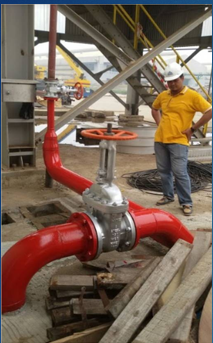
Bandara Soekarno-Hatta & PDAM
Didukung Tenaga Ahli Bersertifikat
Kemitraan strategis dan rekam jejak implementasi MEP, Instrumentasi, dan Kontrol Otomasi di sektor vital nasional.
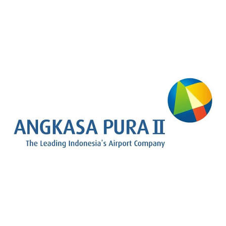
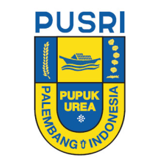
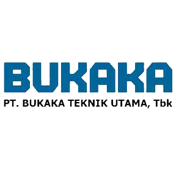
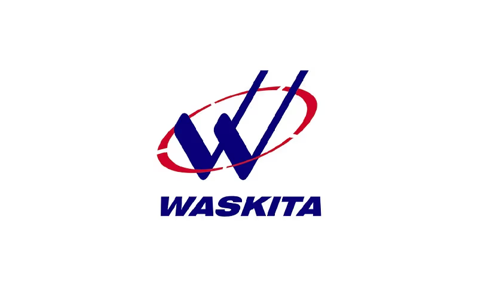
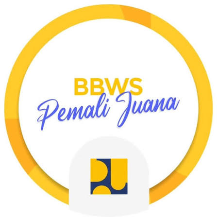
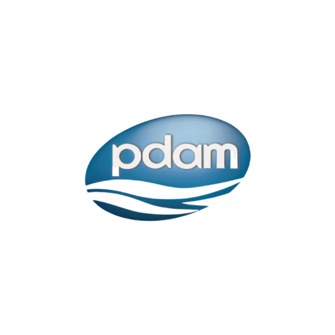
Kami bukan sekadar kontraktor mesin dan pipa. Kami adalah sekumpulan insinyur, teknisi lapangan, dan pemecah masalah yang bekerja dengan hati untuk memastikan infrastruktur Anda beroperasi tanpa kendala.
Berdiri resmi pada Agustus 2015, PT Panca Lingga Perkasa tumbuh dari semangat untuk menjembatani kebutuhan industri modern yang menginginkan kepastian mutu, transparansi, dan efisiensi operasional.
Kami mengkhususkan diri dalam 4 pilar utama: Mekanikal Elektrikal Plumbing (MEP), Instrumentasi & Kontrol Otomasi, Real-Time Monitoring IoT, serta Konstruksi & Fabrikasi Baja. Setiap proyek kami jalankan dengan pendekatan yang memanusiakan pekerja, menghargai waktu klien, dan menjaga kelestarian lingkungan.
"Minimize Cost, Maximum Simplicity"
Memberikan solusi teknis yang ringkas, efektif biaya, dan mudah dioperasikan oleh tim klien tanpa kerumitan yang tak perlu.
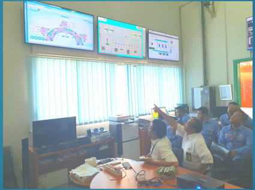
Control & Operation CenterKami percaya teknologi terbaik adalah teknologi yang dipahami oleh penggunanya. Melalui program training & seminar berkelanjutan bersama mitra operator PDAM (forum PERPAMSI) dan otoritas bandara, kami mentransfer keahlian operasional SCADA dan pembacaan sensor secara tulus.
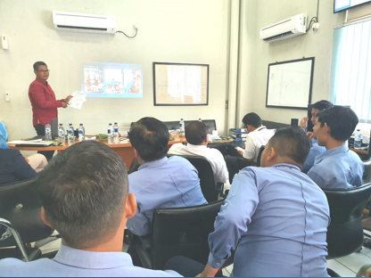
Pelatihan Teknis Internal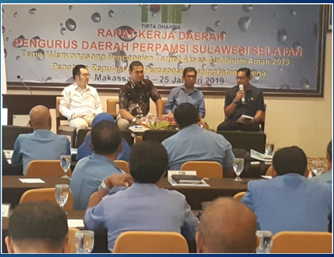
Rakerda PERPAMSIKombinasi keahlian mekanikal, instrumentasi analitik modern, dan ketangguhan konstruksi lapangan untuk mendukung produktivitas industri Anda.
Instalasi pipa industri, pompa distribusi air bersih & limbah (STP/WTP), panel daya, hydrant sistem pemadam kebakaran, serta sistem conveyor pabrik berkapasitas besar.
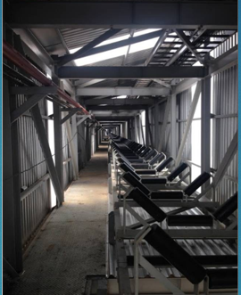
Integrasi sensor proses presisi, PLC/SCADA, Smart Data Logger (Auto-Failover 4G/LAN/Wi-Fi), serta Molinar Cloud Platform dengan analitik AI/ML & telekontrol otomatis.
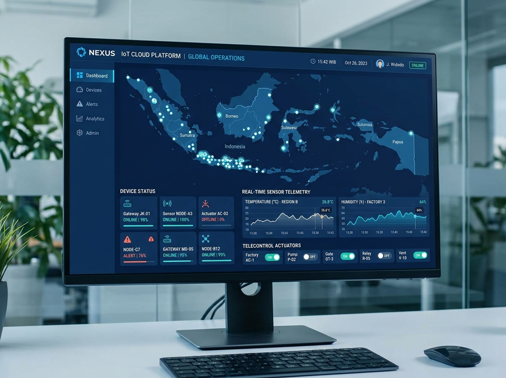
Pembangunan struktur gedung utilitas (MCC), reservoir air skala masif (2000 m³), perkuatan platform jembatan, temporary jetty, serta fabrikasi struktur baja presisi.
Didukung armada peralatan mandiri untuk menjamin kelancaran proyek: Excavator Kobelco SK200, Komatsu PC-75, pemotong beton/aspal, genset, dan mesin las profesional.
Solusi instrumentasi presisi tinggi berstandar internasional dari principal global terpercaya untuk pemantauan kualitas air minum (PDAM), stasiun pemantauan terpadu SPARING KLHK, dan otomatisasi industri.
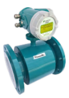
Pengukur debit cairan konduktif dengan presisi tinggi tanpa hambatan mekanis, cocok untuk jaringan air minum PDAM, STP bandara, dan air limbah industri.
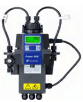
Sensor kekeruhan air online dengan sistem pembersihan otomatis (self-cleaning wiper) untuk pemantauan WTP, instalasi pengolahan air minum, dan effluent industri.
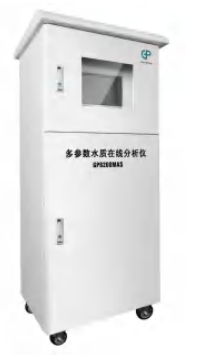
Sistem kabinet monitoring kualitas air terintegrasi untuk mengukur parameter kritis: pH, Kekeruhan (Turbidity), Sisa Klorin (Residual Chlorine), Konduktivitas, dan Suhu secara kontinyu.
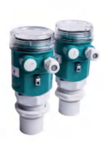
Transmitter level non-kontak dengan teknologi gelombang ultrasonik untuk mendeteksi ketinggian air sungai, reservoir, tangki kimia, dan saluran terbuka tanpa menyentuh cairan.
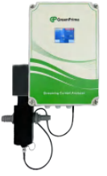
Penganalisis muatan ion koloid air (*streaming current*) untuk mengontrol dosis koagulan (PAC/Alum) secara otomatis pada instalasi WTP sehingga menghemat bahan kimia hingga 30%.
PT Panca Lingga Perkasa melayani pengadaan unit resmi GreenPrima (UK) & Shanghai Ecopro, integrasi sistem IoT Molinar Cloud, instalasi di lokasi, kalibrasi berkala, dan integrasi SCADA/IoT.
Setiap sambungan pipa, instalasi sensor di bandara, dan pengecoran struktur pabrik adalah wujud tanggung jawab tim kami kepada mitra kerja dan masyarakat luas.
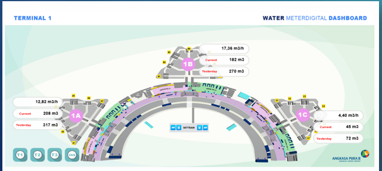
PT Angkasa Pura IIMengintegrasikan sistem pemantauan debit air bersih digital real-time dan penggantian flowmeter outlet STP 745. Membantu manajemen bandara memantau distribusi konsumsi air antar-terminal secara presisi selama 24/7 tanpa henti.
Eksekusi pekerjaan agregat B pada proyek UBS-IIB & CS Pusri Palembang, konstruksi gedung pusat kontrol listrik (MCC), serta fabrikasi struktur baja penopang dan take-up system dengan standar keselamatan industri pupuk yang ketat.
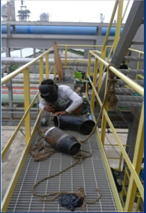
PT Adhi Karya (Persero) TbkTantangan arus deras sungai Musi ditaklukkan tim kami dalam pembongkaran pipa pancang baja Ø100cm (tebal 16mm), pembuatan dermaga darurat (temporary jetty), dan perkuatan platform kerja untuk kelancaran ereksi jembatan penghubung vital.
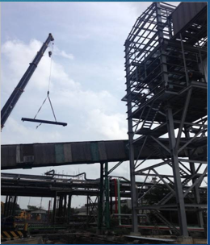
PT Adhi Karya (Persero) TbkPekerjaan pengangkatan dan perakitan struktur rangka baja bentang tinggi menggunakan mobil crane berkapasitas besar, dilengkapi perkuatan sambungan baut mutu tinggi serta pengawasan K3 industri secara terpadu.
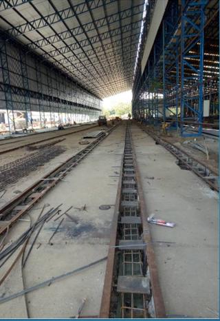
PT Bukaka Teknik UtamaKonstruksi pembesian dan pengecoran jalur rel gantry crane dan lorry transfer untuk fasilitas pabrikasi jembatan. Mampu menahan beban lalu lintas komponen baja berbobot puluhan ton secara kontinyu tanpa deformasi.
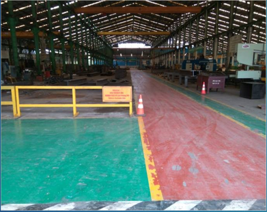
PT Bukaka Teknik UtamaPengecoran lantai kerja berkekuatan beban tinggi (heavy duty slab) dan finishing marka keselamatan pada fasilitas workshop fabrikasi jembatan baja, menjamin kelancaran alur produksi komponen jembatan nasional.
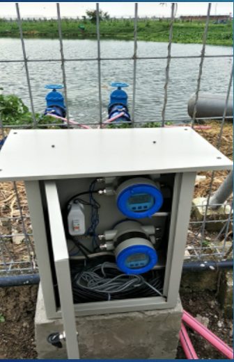
PDAM & Smart Water UtilityInstalasi instrumen pengukur debit air digital dalam kabinet proteksi cuaca outdoor di samping kolam penampungan air. Menghasilkan pembacaan laju aliran air baku secara kontinyu untuk menekan tingkat kehilangan air (NRW).
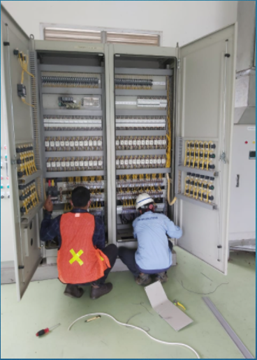
Panel Maker & AutomationPerakitan wiring terminal kabinet panel kontrol instrumen otomatisasi oleh teknisi bersertifikat kami untuk kendali pompa, monitoring sensor kualitas air, dan komunikasi data nirkabel LoRaWAN / GSM ke server pusat.
Kami memadukan ketangguhan eksekusi teknik dengan etika kerja yang jujur, komunikatif, dan transparan.
Kami mendengarkan kendala Anda dengan saksama. Tidak ada istilah teknis yang sengaja dibuat rumit—kami menjelaskan solusi dengan gamblang dan jujur.
Menghilangkan pemborosan spesifikasi berlebihan. Kami merekayasa solusi yang tepat guna, efisien dalam anggaran, serta mudah dirawat tim internal Anda.
Jaminan produk 100% original langsung dari prinsipal, dukungan sertifikat kalibrasi, ketersediaan suku cadang resmi, dan teknisi lokal terlatih.
Didukung armada excavator Kobelco/Komatsu milik sendiri, mesin potong aspal/beton, genset, serta workshop fabrikasi di Pantura Cirebon yang responsif.
Portofolio nyata bersama BUMN ternama (Adhi Karya, Angkasa Pura II, Bukaka, PDAM) membuktikan kapabilitas dan disiplin waktu kerja kami.
Memiliki SIUJK resmi, SIUP Menengah, NPWP Perusahaan aktif, serta terdaftar pada berbagai badan standardisasi konstruksi dan instrumen.
Ketenangan pikiran Anda adalah prioritas kami. Seluruh kegiatan operasional PT Panca Lingga Perkasa berjalan di atas landasan legalitas hukum Republik Indonesia yang sah dan terverifikasi.
No. 6 Tanggal 27 Agustus 2015 oleh Notaris Nyak Amini, S.H., M.Kn.
73.958.678.2-451.000 — KPP Pratama Tigaraksa
No. 1-011462-3603-2-01341/341-BPMPTSP (SBU: SI003, SI008, SI009, BG009)
No. 503 / 02475 – BPMPTSP/30-03/PMIX/2015 (KBLI: 456, 466, 773)
PT Panca Lingga Perkasa merupakan distributor resmi terakreditasi untuk memasarkan, menyediakan kualifikasi tender, suplai instrumen, dan layanan teknis purna jual GreenPrima di Indonesia.
Kami siap berdiskusi hangat untuk mendengarkan kebutuhan teknis pabrik, utilitas, atau proyek infrastruktur Anda.
Tim kami akan merespons dalam waktu kurang dari 1x24 jam kerja.
Langsung terhubung dengan Engineer Konsultan kami:
0813-9050-6150Cluster Green Valley Serpong Garden E.17 No.04, Cibogo, Cisauk, Kabupaten Tangerang, Banten 15344.
Jalan Raya Pantura Cirebon, Desa Plumbon RT 07 / RW 02, Kec. Plumbon, Kabupaten Cirebon, Jawa Barat.